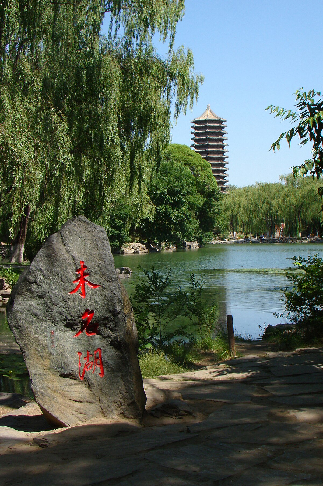

北京大學
北京大學（北大）成立於1898年，是中國歷史最悠久且最具聲望的高等學府之一。校址位於北京市海淀區，靠近頤和園等歷史名勝。該校以嚴謹的學術課程、傑出的師資力量和多元化的學生群體而聞名。
北京大學享有全球聲譽，並與世界多所頂尖大學保持合作關係，吸引來自世界各地的學生，成為文化交流與學術討論的中心。學校致力於通過教育、科研和創新來推動知識進步，並服務社會發展。
北京大學提供多種本科、碩士和博士課程，成為希望來中國深造學生的理想選擇。此外，北京大學匯聚了許多著名學者，並培養了大量在各個領域做出卓越貢獻的傑出校友。